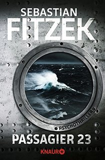

Thriller des Monats
Sebastian Fitzek: Das Joshua Profil
Kindle Edition: 14.99 €
gebundene Ausgabe: 19.99 €
Der erfolglose Schriftsteller Max ist ein gesetzestreuer Bürger. Anders als sein Bruder Cosmo, der in der Sicherheitsverwahrung einer psychiatrischen Anstalt sitzt, hat Max sich noch niemals im Leben etwas zuschulden kommen lassen.
Doch in wenigen Tagen wird er eines der entsetzlichsten Verbrechen begehen, zu denen ein Mensch überhaupt fähig ist. Nur, dass er heute noch nichts davon weiß ... im Gegensatz zu denen, die ihn töten wollen, bevor es zu spät ist.
Das könnte Sie auch interessieren:

Die Blutschule
Max Rohde
Max Rohde

Passagier 23
Sebastian Fitzek
Sebastian Fitzek
Krähenmutter
Catherine Sheperd
Catherine Sheperd